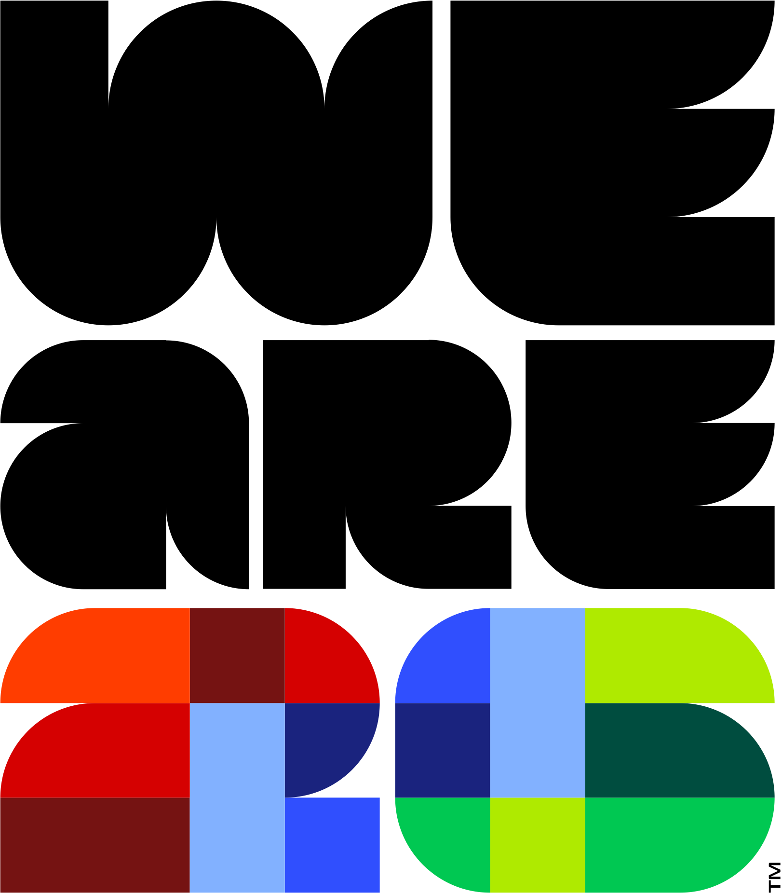
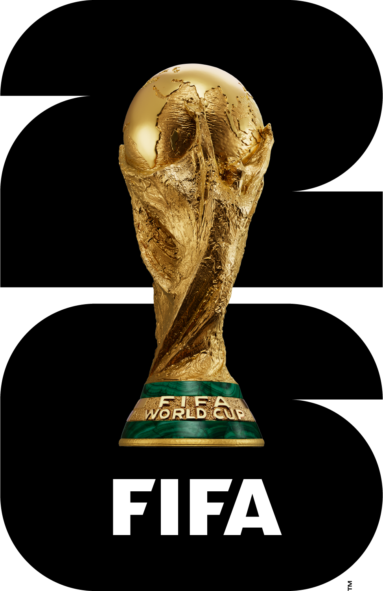

Arrivals & Departures
Ready to be part of a high-energy, world-class team delivering seamless experiences at major airports? Step into a key role that keeps the heart of FIFA events beating by coordinating smooth arrivals and departures for hundreds of FIFA clients!
What is AND?
That’s where the FIFA magic starts and finishes! You’ll be the first and last impression for players, referees, VIPs, even the FIFA President, as they touch down. You’re the behind-the-scenes hero making sure everyone moves smoothly from the airport, through customs, and right to their hotel or stadium. This fast-paced role puts you at the center of an electrifying event, working closely with airports, transport, and security teams to keep everything running perfectly. You’re not just managing logistic, you’re part of the world’s biggest football event, rolling out the red carpet for teams and VIPs from arrival to departure.

Why This Role Rocks
- Lead flawless airport operations at with consistent, top-tier service every step of the way.
- Own the entire journey, from arrival gates to stadium seats and hotel rooms, connecting people with the places they need to be.
- Collaborate with a dynamic network including airport operators, security, and Host City teams.
- Manage logistics in busy, nonexclusive venues where precision and teamwork make all the difference.
- Support and enhance daily airport operations during peak times, making an unforgettable impact on clients’ experiences.
Who You Are
- A master coordinator who thrives in fast-paced, multi-agency environments.
- A skilled communicator who effortlessly unites diverse teams and partners.
- Passionate about delivering outstanding customer experiences, with a smile.
- Ready to adapt and innovate to overcome unique logistical challenges.

What You'll Get
- The thrill of working at the forefront of international sports events.
- Opportunities to collaborate with global professionals and experts.
- The chance to create smooth, memorable journeys for hundreds of FIFA clients.
Step into the spotlight, where your skills drive world-class event success. Apply now and be the game changer behind the scenes of FIFA!
Learn more: FIFAWorldCup.com